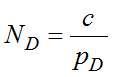
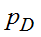
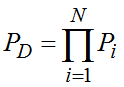
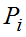

3.4.3. Выполнение поиска ключа, оценивание сложности дифференциального криптоанализа
3.4.3. Выполнение поиска ключа, оценивание сложности дифференциального криптоанализа
Расшифровка части ключа перед последней подстановкой, как показано на рис. 3.35, или аналогичная может быть выполнена следующим образом. Берется большое количество пар данных вида «выбранный открытый текст/соответствующий ему шифртекст». Открытый текст во входных данных в парах выбирается таким образом, чтобы в позиции входа первого дифференциала модели всего шифра разность соответствовала модельной. В нашем случае разность между парами открытых текстов в четырех битах перед первой подстановкой слева должна быть равна 5(0101). Остальные биты открытых текстов могут быть любыми. Итак, у нас есть пары открытых текстов с нужными разностями и пары шифртекстов, которые им соответствуют. Как видно из модели, разность в парах блоков данных перед последней подстановкой должна быть равна 1(0001). Но на эту характеристику влияет 4 бита последнего подключа и подстановка последнего раунда. Для того чтобы найти верное значение этих 4 бит, необходимо поочередно перебрать все возможные их значения (0000-1111) и выбрать то, у которого вероятность ближе всего совпадает с вероятностью дифференциальной модели. Для подсчета вероятности, соответствующей каждому значению ключа, необходимо выполнить частичное расшифрование последнего раунда с этим ключом всех пар шифртекстов, и рассчитать отношение числа пар с нужной разностью к общему числу пар. Обычно для верной части ключа это значение максимально.
Точное определение количества выбранных пар исходных текстов, требуемых для проведения криптоанализа, является достаточно сложной задачей. Однако, существует хорошее правило аппроксимации числа выбранных пар открытых текстов, требуемых для анализа правильных пар при опробовании различных значений ключа:
,
где − вероятность дифференциальной модели R-1 раундов алгоритма шифрования с числом раундов равным R, а c − небольшая константа, c>1.
Вероятность дифференциальной модели вычисляется как
,
где N – количество активных (входящих в состав дифференциальной модели) подстановок; вероятность появления дифференциалов, входящих в модель, равна .
Сложность проведения дифференциального криптоанализа оценивается по количеству требуемых для его проведения выбранных пар "открытый текст/шифртекст", с учетом количества требуемых для атаки операций шифрования. Атака считается успешной, если она дает выигрыш в обоих компонентах по сравнению с атакой методом полного перебора.
Обеспечения стойкости блочных шифров к дифференциальному криптоанализу сосредоточены на улучшении дифференциальных свойств SBox-ов (т. е. минимизации вероятностей дифференциалов), максимальном размере SBox-ов и поиске структуры линейного преобразования с максимальным числом активных SBox-ов. Рекомендуется выбирать подстановки максимального размера, так как это существенно уменьшает вероятности дифференциалов. Кроме этого, можно выбрать сложное зависящее от ключа конечное преобразование с высокой нелинейностью в поле по модулю  . Этот прием не позволит провести частичное расшифрование последнего раунда, и следовательно, дифференциальный криптоанализ будет неработоспособным.
. Этот прием не позволит провести частичное расшифрование последнего раунда, и следовательно, дифференциальный криптоанализ будет неработоспособным.
Применительно к современным блочным шифрам, дифференциальный криптоанализ скорее является инструментом доказательства криптостойкости, чем взлома. Это связано с высокими требованиями к объему данных и числу вычислительных операций.